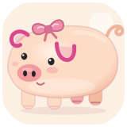
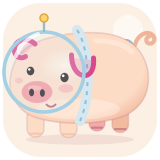
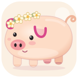
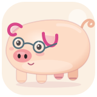

用一点点推理，找到每只熟睡的小猪。
计时和游戏已暂停
哼唧、扑翅、弹球、落子、连锁消除，每一种快乐都有自己的声音。三个音色随时切换，猪叫和提示音可以分别调节。




短短的腿，卷卷的尾巴，圆圆的小肚子。点一只换上新造型，游戏里的小伙伴也一起换装。
十种原创配色（含白巧克力、黑巧克力与奶牛花花），十种小装饰，十二套小猪服饰。造型参考 PigHub 的比例与气质原创绘制：大肚子、极短腿、弯卷耳、卷尾巴。
29 款游戏全部可以离线玩（斗地猪的局域网联机需要同一个 Wi-Fi）。六款棋类都能和电脑下，也能两人同屏轮流。鼠标、触屏或键盘都能操作；“猪猪跳一跳”需要按住蓄力再松开。每款游戏的具体玩法，点工具栏的“玩法”或看游戏下方的“游戏说明 / 操作说明”。
切换游戏会开始新的一局；打开设置或切出窗口会自动暂停，回来后点“继续”。侧栏可以按分类筛选、按最近玩过 / 玩得最多 / 名称排序，也可以搜索。
成绩、猪猪造型和声音设置自动保存在本机。桌面便携版优先保存在 exe 同目录的「猪猪游乐场存档」，拷贝 exe 和这个文件夹即可带走成绩；目录不可写时保存在当前电脑。网页版保存在当前浏览器。
扫猪逻辑改编自 Ania Kubow 的 MIT 开源 minesweeper。新增玩法参考 Steven Lambert 的 Basic Tetris / Breakout（CC0）、Ania Kubow 的 Connect Four（MIT）及 mashukui/web-games（MIT），规则与界面由本项目重新实现。猪猪造型参考 pighub.top 的圆滚滚气质，由本项目原创绘制，未复制站内图片。4.1 参考 flashhawk/spp.js 的切割轨迹、egnaro9/match3-engine 的特殊组合与独立棋子编号、ShaistaShabbir-prog/candy-crush-match3 的连锁演出、selenebun/bullethell 的小判定与慢速移动、alpiex1336-code/Rhythm-Game-v2 的音频时钟和长按判定。4.5.1 的猪猪跳一跳参考 MIT 开源 shenmaxg/web-jump 的蓄力距离、落台与镜头跟随，使用现有猪猪素材重新接入。4.4.5 新增黑猪8，参考 MIT 开源 neuralsorcerer/8ballpool 的等质量碰撞、滚动减速与八球回合规则；重新实现为离线 Canvas 球桌、固定步长物理、袋口碰撞、简化休闲规则与三档电脑，球桌和猪猪球均由程序绘制，碰撞猪叫为本地合成。4.6.0 新增猪猪闯算门，参考 MIT 开源 5ubh4d45/CountMasters_Prototype 的门加乘结算与按队伍宽度收窄移动边界；重新实现为 Canvas 伪 3D 跑道、减除 / 平方开方 / 微积分算式门、野猪群与巨大猪王，画面全部由程序绘制。对应 MIT 许可随源文件保留。四段动画猪叫来自用户指定视频 BV1gG4y1J7KP，音频版权归原权利人；不属于 MIT 许可范围。新增游戏音效均为本项目合成。4.2 的猪猪轮盘、全部猪猪新造型和合成猪叫，以及 4.3 的三阶段积分赛规则、发射猪仔、腐肉 / 猪蹄道具、猪王嘚瑟舞与配乐，4.4 斗地猪的猪猪扑克、邪恶猪猪与屠夫形象、牌型特效和音效均为本项目原创（斗地主是公有的传统玩法）；PigHub 只作为猪猪比例与气质的观察参考，没有使用其图片。